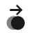
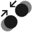
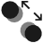

| geste | effet | |
|---|---|---|
| glisser nœud |  | déplacer ce nœud dans l'espace hyperbolique |
| appuyer sur un nœud | sélectionner ce nœud | |
| taper nœud 2 fois |  |
faire apparaître un menu contextuel pour ce nœud |
| pincer en ouvrant NE-SO |
agrandir étiquettes et images | |
| pincer en fermant NE-SO |
 | réduire étiquettes et images |
| pincer en ouvrant NO-SE |
 | faire zoom avant sur l'arbre |
| pincer en fermant NO-SE |
 |
faire un zoom arrière sur l'arbre |
| bouton | effet | |
|---|---|---|
| Racine |  |
annule les déplacements et revient à la racine |
| Radial | orientation radiale | |
| Nord |  |
orientation vers le nord, décale vers le nord si le bouton est appuyé à nouveau |
| Sud |  |
orientation vers le sud, décale vers le sud si le bouton est appuyé à nouveau |
| Est |  |
orientation vers l'est, décale vers l'est si le bouton est appuyé à nouveau |
| Ouest |  |
orientation vers l'ouest, décale vers l'ouest si le bouton est appuyé à nouveau |
| Agrandir |  |
augmente la distance de parent à enfant |
| Réduire | |
réduit la distance de parent à enfant |
| Écarter |  |
agrandit le secteur angulaire alloué aux nœuds enfants |
| Rapprocher |  |
réduit le secteur angulaire alloué aux nœuds enfants |
| Zoom + |  |
faire un zoom avant, affecte seulement l'agencement et la position des nœuds |
| Zoom - |  |
faire un zoom arrière, affecte seulement l'agencement et la position des nœuds |
| Zoom 1 |  |
annule les effets de zoom |
| Grossissement + |  |
agrandit la taille des étiquettes et images |
| Grossissement - |  |
réduit la taille des étiquettes et images |
| Grossissement 1 |  |
annule les effets de grossissement |
| bouton | effet | |
|---|---|---|
| Rechercher |  |
recherche de nœuds dans l'arbre |
| Lancer | lancer / poursuivre la recherche | |
| Annuler |  |
annuler la recherche |
| Paramètres |  |
paramètres de la recherche (étendue et mode) |
| étendue (ce qui est comparé à la cible) |
||
|---|---|---|
| Étiquette | recherche sur les étiquettes des nœuds | |
| Content | recherche sur les contenus des nœuds | |
| ID | recherche sur les ids des nœuds | |
| Lien | recherche sur les liens des nœuds | |
| Source | la cible est la source d'un nouvel arbre | |
| mode (mode de comparaison) |
||
|---|---|---|
| Égale |  |
l'élément est égal à la cible |
| Commence Par | l'élément commence par la cible | |
| Inclut | l'élément inclut la cible | |
| Est | |
la source est la cible |
| élément de menu |
effet | |
|---|---|---|
| Annuler |  |
fermer le menu |
| Info |  |
affiche des informations sur ce nœud |
| Centrer |  |
amener ce nœud au centre |
| Suivre Lien |  |
suivre le lien attaché à ce nœud |
| Développer |  |
développer le sous-arbre à partir de ce nœud |
| Rechercher |  |
rechercher des nœuds, à partir de ce nœud |
| Aller à |  |
aller à |